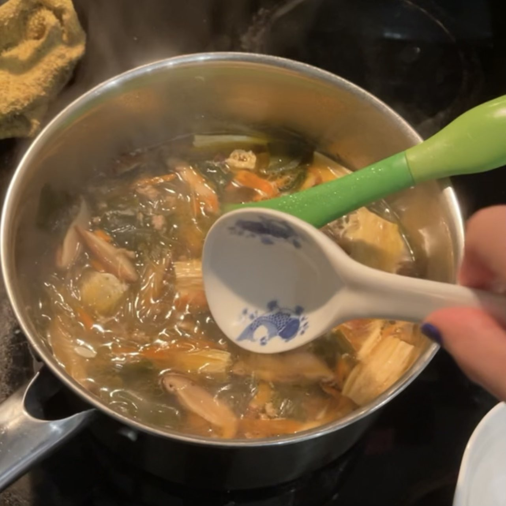
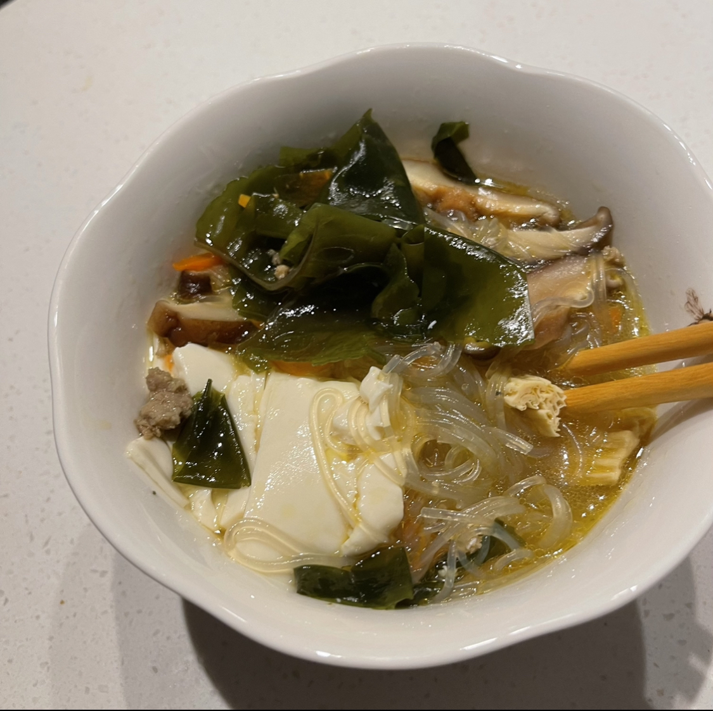

Back to Home
Aunty Celen's Silken Tofu Pour-Over Soup


Description
Ingredients
- Your desired amount of ground turkey or pork (Optional)
- 8 grams of Korean Soup Seaweed
- 8 grams of dried bean curd skin
- 2 chopped scallions
- 3 dried shiitake mushrooms
- 1/2 a small to medium carrot (shredded)
- 1 bundle of mung bean starch vermicelli noodles (soaked)
- 1 tbsp oyster sauce
- 2 tbsp dark soy sauce
- 1 tsp garlic powder
- 1 tsp granulated sugar
- 1 to 5 pinches of msg
- white pepper and salt to taste
- 1 tsp of sesame oil
- 1 box (8oz) of silken tofu (thinly sliced)
- 1 quart of stock or water
Steps
- Rinse and soak the seaweed and shiitake mushrooms together
- Reserve the soaking liquid for later. Slice shiitake mushrooms
- Soak the bean curd skin and vermicelli noodles in separate bowls
- Saute scallions and ground meat (if applicable) in oil on medium heat until the meat is cooked
- Add carrots and cook for 2 minutes
- Add shiitake, bean curd skin, oyster sauce, sugar, soaking liquid, soy sauce, garlic powder, msg, and sesame oil
- Boil until the flavors have sufficiently melded
- Add seaweed and vermicelli. Cook for 2-3 minutes
- Finish with sesame oil
- Serve hot poured over thinly sliced silken tofu in a beautiful bowl